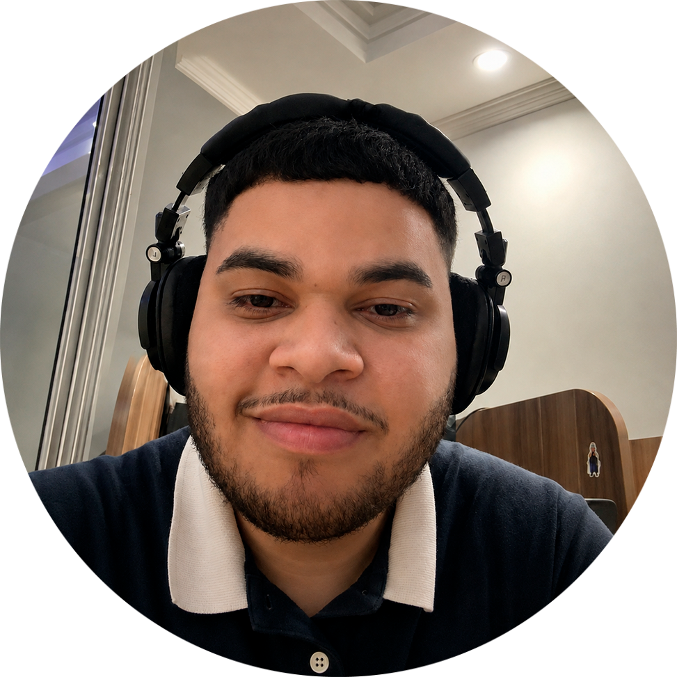

SOM. IDEIAS. CONEXÕES.
Elias RodriguesTambém conhecido como SAILE.
@eliasnrodriguesEntre o som e a tecnologia,
transformo ideias em experiências.

SOM. IDEIAS. CONEXÕES.
Entre o som e a tecnologia,
transformo ideias em experiências.